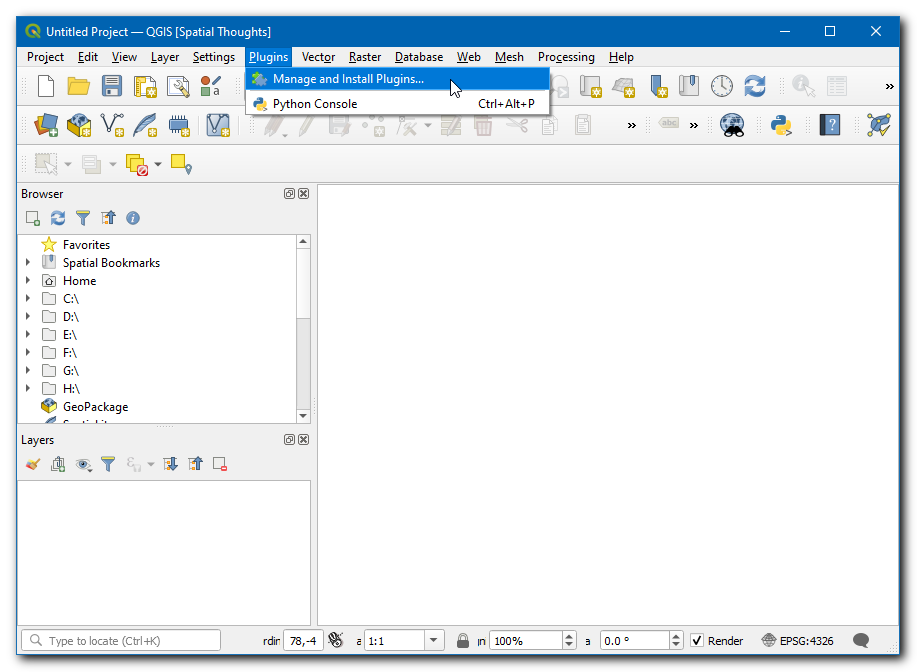
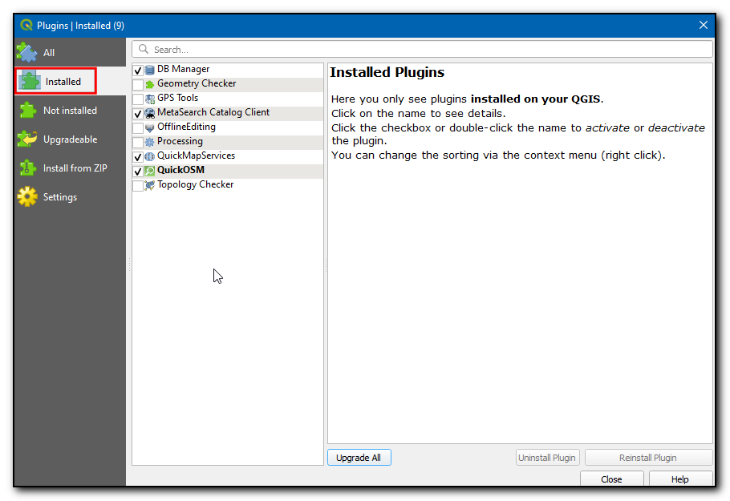
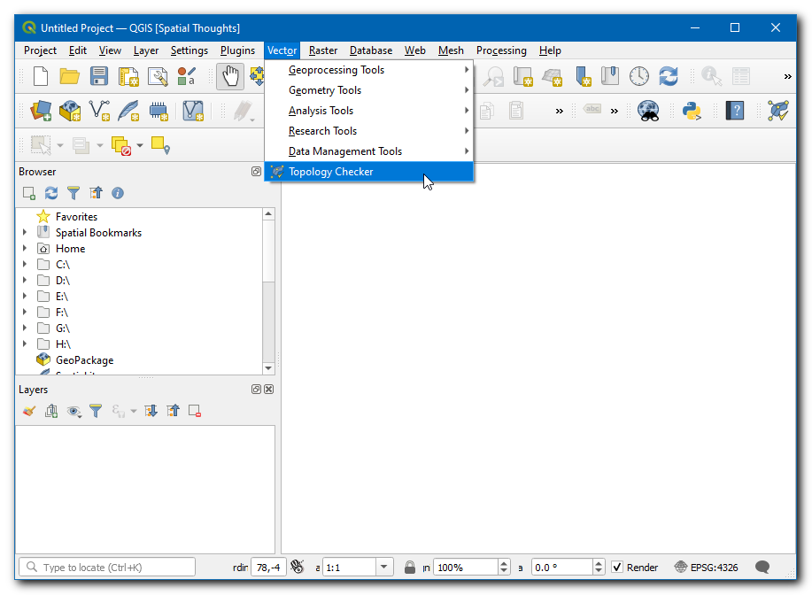
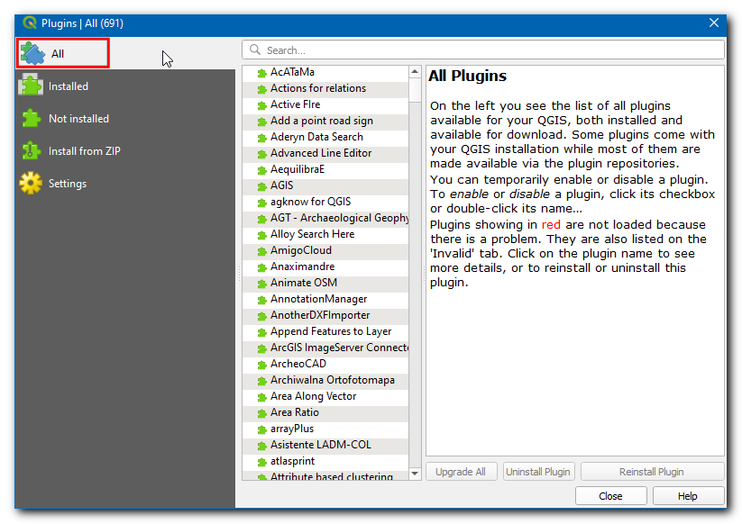
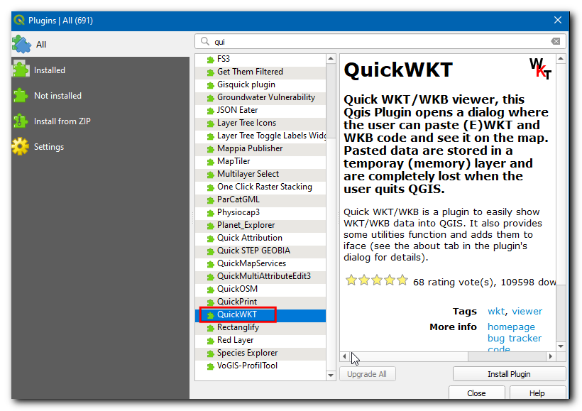
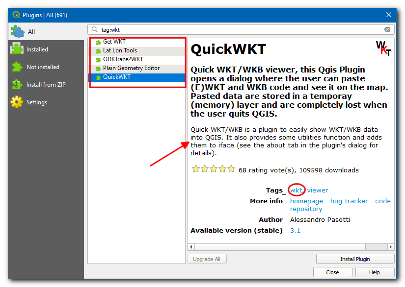

Usar Complementos (QGIS3)¶
Los complementos en QGIS agregan funcionalidades útiles al software. Los complementos son escritos por desarrolladores QGIS y otros desarrolladores independientes que quieren extender la funcionalidad núcleo del software. Estos complementos son luego subidos al Repositorio de Complementos QGIS, revisados por los miembros de la comunidad, y luego son puestos a disposición de todos los usuarios QGIS.
Vista general de la tarea¶
En este tutorial, aprenderá como habilitar Complementos Núcleo así como descargar e instalar Complementos Externos. También aprenderá como ubicar los complementos una vez esté instalados.
Procedimiento¶
Complementos Núcleo¶
Los complementos núcleo ya son parte de la instalación estándar de QGIS. Para usarlos, sólo necesita habilitarlos.
Abra QGIS. Clic en . para abrir el diálogo Complementos.
Incluso si esta es su primera vez usando QGIS, verá bastantes complementos listados bajo la pestaña Instalado. Esto ocurre porque existen Complementos Núcleo y fueron instalados durante la instalación QGIS.
Habilitemos uno de los complementos. Marque la casilla de verificación junto a Complemento Revisor de Topología. Esto habilitará el complemento y podrá usarlo. Una cosa para hacer notar es que los complementos tienen la habilidad de insertar elementos al menú en varios lugares y crear nuevos paneles y barras de herramientas. Algunas veces, es difícil saber como encontrar las herramientas recientemente habilitadas. Una pista es mirar en la descripción del complemento. Aquí la descripción dice Categoría: Vector. Eso indica que el complemento podría encontrarse bajo el menú Vector una vez esté habilitado. Clic Cerrar.

Nota
Muchos complementos núcleo no están habilitados de forma predeterminada. Los complementos son cargados al inicio de QGIS, de manera que habilitar muchos complementos puede demorar el tiempo de inicio. Deshabilite todos los complementos que no necesite para una mejor experiencia.
Ahora que está habilitado complemento Revisor de Topología, puede ir a para usar la funcionalidad agregada por el complemento.

Complementos de Terceros¶
Los complementos de terceros están disponibles en el Repositorio de Complementos QGIS y necesitan ser instalados por los usuarios antes de usarlos. Los complementos de terceros puede ser categorizados ampliamente en los siguientes subgrupos.
Complementos IGU
Complementos de Procesamiento
Complementos Experimentales
Ahora aprenderemos cómo instalar complementos de cada una de estas categorías.
Complementos IGU¶
Estos complementos son instalados en uno de los Menús o Barras de herramientas. Ahora instalaremos un complemento llamado QuickWKT que permite que los usuarios copien/pegue cadenas de geometría WKT y las visualicen.
Abra QGIS. Clic en . para abrir el diálogo Complementos.

Clic en la pestaña Todos. Aquí verá una lista de complementos listados.
Para este tutorial, encontremos e instalemos un complemento llamado QuickWKT. A medida que comienza a escribir qui en la caja buscar, verá los resultados de la búsqueda abajo. Clic en QuickWKT.
Ahora se mostrará información acerca del complemento. Este complemento es un visualizador WKT. Clic el «wkt» en Etiquetas. Esto irá a buscar todos los complementos bajo esta etiqueta.
Ahora, clic Instalar Complemento en la caja de diálogo QGIS Complementos. Ahora una barra de mensajes de información QGIS mostrará un mensaje
Complemento instalado exitosamente.
Si se dio cuenta, no se mencionó la categoría de complemento en la descripción. Esto hace difícil determinar como acceder al complemento recientemente instalado. La mayoría de los complementos son instalados bajo el menú Complementos en QGIS. Clic sobre y verá el complemento recientemente instalado. El complemento también agrega un botón a la barra de herramientas Complementos. Puede también usar ese botón para acceder al complemento.

Complementos de Procesamiento¶
Estos complementos añadirán nuevos algoritmos (i.e., herramientas) a la Caja de herramientas Procesos de QGIS. Esta es la manera preferida para construir complementos que añaden nueva funcionalidad de análisis espacial. En vez de una herramienta autónoma, un algoritmo de caja de herramientas procesos puede ser usado como una parte del constructor de modelos o en un modo de procesamiento por lotos para automatizar flujos de trabajo SIG. Ahora vamos a instalar un complemento de procesos.
Abra QGIS. Clic en . para abrir el diálogo Complementos.

Clic en la pestaña Todos, y busque ORS Tools.

Clic en el complemento y clic Instalar Complemento en le caja de diálogo QGIS Complementos. Ante una instalación exitosa, una barra de mensaje de información QGIS mostrará un mensaje
Complemento instalado exitosamente.
El complemento añadirá una carpeta con herramienta en la Caja de herramientas Procesos. Vaya a .

Hay muchos grupos de herramientas, y aquellos que tiene el logo QGIS junto a ellos son llamados Algoritmos nativos. Notará una nueva carpeta abajo llamada ORS Tools. Esta es añadida por el complemento que acabamos de instalar y es conocido como un Proveedor. Los Complementos de Procesos QGIS son capaces de añadir nuevos Proveedores - como ORS Tools - que pueden contener uno o más nuevos algoritmo de procesamiento.

Expanda la carpeta de herramienta ORS para explorar todas las herramientas disponibles bajo ella. Puede hacer doble clic en la herramienta para ejecutarla.

Nota
Los complementos pueden añadir herramientas así como nuevos elemento de menú. El complemento ORS Tools también añade un nuevo elemento de menú para configuración bajo el menú .
Complementos Experimentales¶
Algunas veces busca un complemento específico, pero no puede encontrarlo en la pestaña Todos. Puede ser porque el complemento está marcado como Experimental . Aquí va cómo instalar un complemento experimental.
Abra Complementos mediante . Clic en la pestaña Configuración. Verá una opción llamada Mostrar también complementos experimentales. Clic en la casilla de verificación junto a ella, para activarla.

Ahora cámbiese de vuelta a la pestaña Todos y busque el complemento “RasterAttributeTable”.

Clic en el complemento. Puede ver que está marcado como experimental. Clic Instalar Complemento Experimental y cierre la caja de diálogo Complementos.

Nota
Use los complementos experimentales con precaución. El complemento experimental puede no estar bien probado o estar bajo un desarrollo rápido.
Puede usar el complemento yendo a .

Explorar el Repositorio de Complementos QGIS¶
QGIS tiene un rico ecosistema de complementos de terceros. El repositorio oficial de complementos QGIS contiene más de 1000 complementos. Puede explorar y descubrir nuevos complementos que podrían ser de su interés. Ahora vamos a explorar el repositorio de complemento.
Vaya al Repositorio de Complementos QGIS, y clic en COMPLEMENTOS.

Esta página lista todos los complementos disponibles. Puede hacer clic en los encabezados para ordenar los complementos por diferentes atributos.

También hay diferentes secciones como Presentado, Popular, etc. para permitir descubrir complementos interesantes. Clic en Nuevos complementos. Esto irá a buscar todos los últimos complementos. Puede seleccionar cualquier complemento de su elección. Para este tutorial, vamos a escoger RasterAttributeTable.

Cámbiese a Versiones. Aquí se lista la historia de los lanzamientos y versiones disponibles. Muchos complementos sólo son compatibles con ciertas versiones de QGIS. La Mínima versión QGIS lista el requerimiento de versión QGIS para el complemento.

Una vez que encuentre un complemento, puede abrir QGIS e instalarlo desde el Administrador de Complementos como se mostró en secciones previas.
If you want to give feedback or share your experience with this tutorial, please comment below. (requires GitHub account)